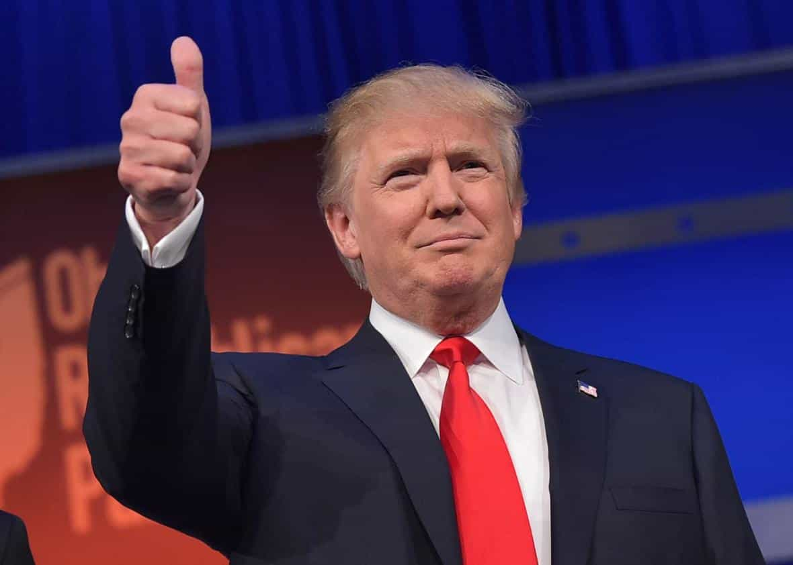

< < < Back
It’s A Hundred Times Easier To Come Out As Gay Or Transsexual Than As A Conservative In Hollywood – Return Of Kings
Hollywood is relentlessly making it hostile to be a conservative entertainer. Far from plateauing out, this situation is becoming more retrograde still. As if to mock it, gay, lesbian and transgender individuals who “come out” often receive a financial windfall for their revelation in the form of a bigger and better career, plus inevitable paid interviews and photoshoots.
ESPN, Vogue and damn near every mainstream publication would have you believe that Bruce Jenner is the paragon of bravery for publicly making his “transition” (snip-snip, Brucey!) to womanhood. Forget the massive dollar signs that came with the shift, not to mention the chance to outdo his previously much more famous ex-wife Kris.
The same goes for gay NBA referee Bill Kennedy, who announced his sexuality very recently and was lauded as if he were some sort of whistleblower fearing for his life. Yet whose career would suffer the most from “coming out”: a conservative celebrity who supports Donald Trump or Ted Cruz, or a gay or transsexual celebrity? We know the answer.

Having multiple surgeons hack off or hack into your genitals is far more acceptable in Hollywood than supporting a political candidate who dares that America aim for more.
When one looks at American voting trends, party registrations and other indicators, conservatives are not just underrepresented in Hollywood; they are, categorically, a hunted species. Nevertheless, the British gay advocacy group Stonewall, which has every interest in seeing a high estimation of non-heterosexual numbers, says that a mere 5-7% of people are gay, lesbian or bisexual, an estimate presumably extending across the Atlantic to the States. Non-LGBT industry figures hover around just 3-4%.
The paucity of conservative actors, singers and other entertainers is shocking. Nominally “conservative” celebrities like Bruce Willis and Gary Sinise either claim a half-liberal bent (Willis) or tend to make pronouncements that avoid the most contentious issues, such as Sinise’s interest in foreign policy but general disinterest in discussing issues of abortion, gay marriage, and immigration (and even then we do not know his underlying ideology).
As a nod to tokenism, a small number of conservative elder statesmen are permitted in Hollywood, including Clint Eastwood and Jon Voight (and the latter in particular has become increasingly marginalized).
Gay entertainers, anyone?

Sir Elton Hercules John is one of countless celebrities who can count on Hollwyood support and still getting work for being who they are. Conservative actors, paid to play other people, ironically, cannot, along with similarly-minded singers and others.
The path to coming out as gay, lesbian or bisexual is comparatively a piece of cake. If you don’t think so, check how familiar these names sound: Billie Joe Armstrong (Green Day), Drew Barrymore (a lot of bad films), composer Leonard Bernstein, Chris Colfer (Glee), CNN presenter Anderson Cooper, Ellen DeGeneres, Stephen Fry (Blackadder), Lady Gaga, Neil Patrick Harris (How I Met Your Mother), Elton John, Kesha, Ian McKellen (The Lord of the Rings), Ricky Martin, Wentworth Miller (Prison Break), Cynthia Nixon (Sex and the City), Jim Parsons (The Big Bang Theory), Zachary Quinto (Star Trek), RuPaul (my editor and I will need a few years to describe this person) and George Takei (the older Star Trek franchise). By all means check the wider Wikipedia listings, which run for pages and include hundreds and hundreds of celebrities.
Finding conservative celebrities is the harder task. Figures like James Woods, who seems to have been punished by Hollywood ever since he identified himself as a conservative Blue Dog Democrat, exist as outliers. The person who makes a list of dozens of conservative names to try to prove this assertion wrong forgets that probably ten to twenty thousand celebrities of some sort exist in the public consciousness. We may not know all of their names personally and some have died, but even a hundred names is insufficient. Furthermore, only a few of these individuals are truly top-tier actors, singers or other showbiz royalty.
Attempted political indoctrination, which starts with the fact that the vast majority of college professors are liberal, still produces a population where the majority of college graduates, like in 2012’s Presidential election, can vote Republican. But we are denied a celebrity environment where as little as one in twenty people who declare their political beliefs can be conservative.
The limits of “tolerance” are growing tighter and tighter

Still in the fold now, will Vince Vaughan be eventually punished for his views? Whatever the case, others following his example can expect a significant backlash.
Expect a lot more hostility to more well-known celebrities with the boldness to evade leftist positions. Responses to libertarian Vince Vaughan’s suggestion about school employees having guns were tepid, probably reflecting the esteem in which the affable comedic actor is held. Yet Hollywood is unlikely to make room for more men of his caliber, especially younger ones.
Going forward, it will be useful for those of us critical of sheep-like celebrity conformity to keep tabs on the relationship between the number of LGBT, liberal and conservative celebrities. Although regular people sense a Hollywood bias, their understanding needs to be made explicit. When they see further how Tinseltown tries to make cookie-cutter political mouthpieces, they are better placed to know to spend their money elsewhere.
Bring back the days of Gary Cooper and John Wayne the actors, not RuPaul the cross-dresser.
Read More: Why Do Hollywood SJW’s Still Defend This Admitted Pedophile?